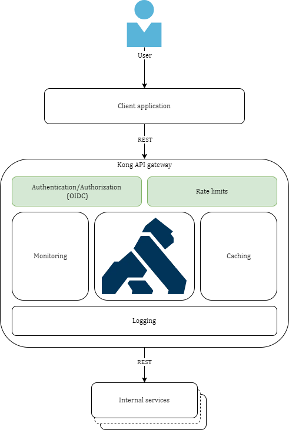
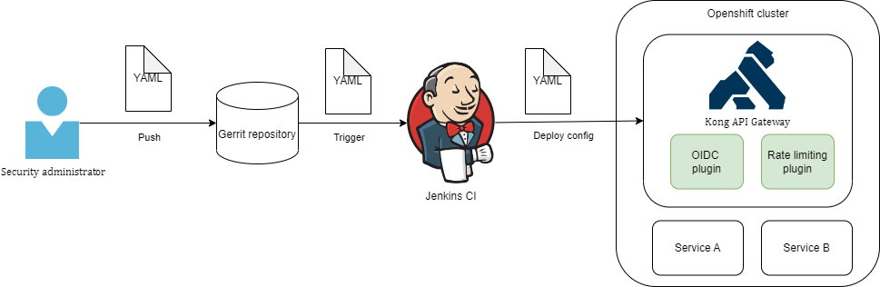
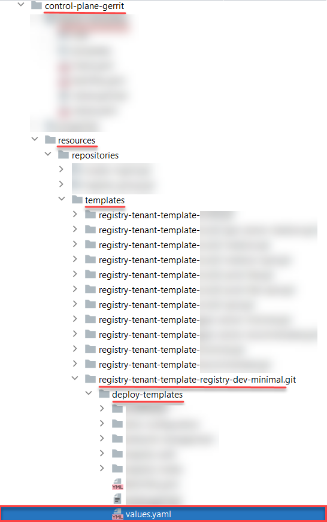
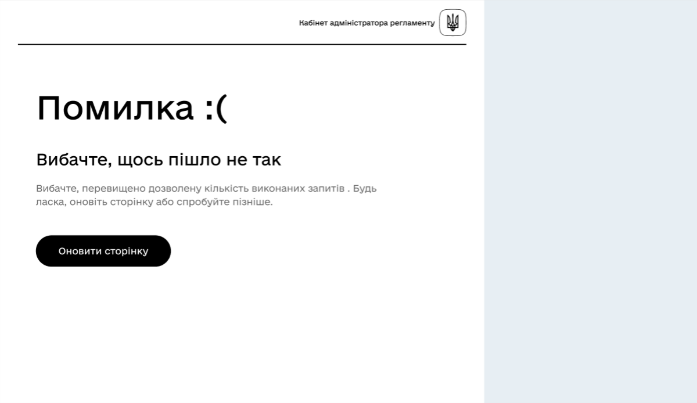
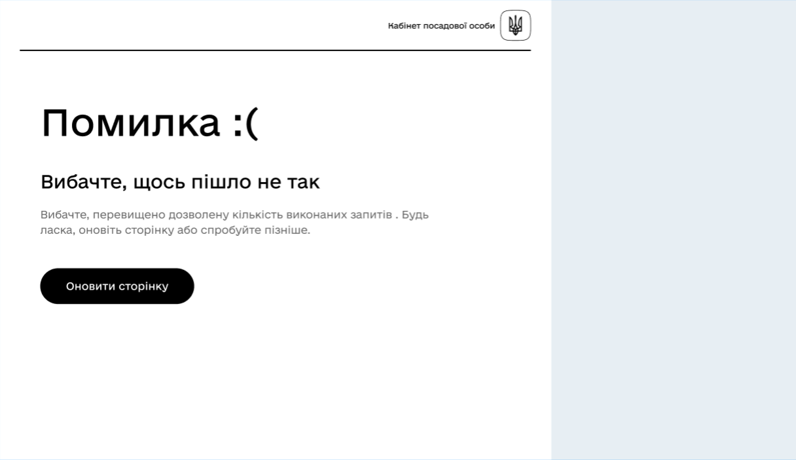
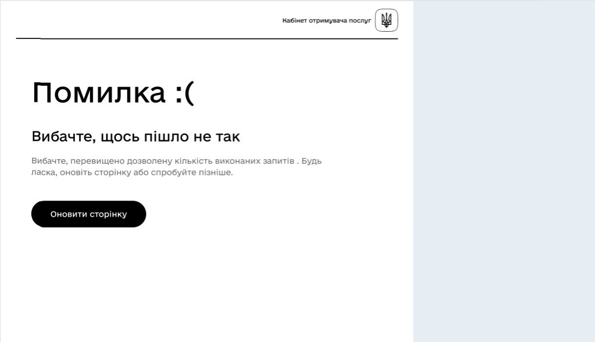

API Rate Limits: limiting the number of requests per time unit
1. Overview
Rate limiting is a network trafic limiting strategy.
API Rate Limits — these are limits of the number of HTTP-requests to the service or route per a defined time period in seconds.
The mechanism of API Rate Limits is based on the Rate-Limiting-plugin for Kong API Gateway. If the service/route does not have an authentication level, the limit will be set for client IP address. Otherwise, HTTP-header can be used for limiting, for example user ID, user role ID, or user organization ID.
|
It is imperative that the rate-limiting plugin is executed after the OIDC-plugin! This means that the OIDC-plugin priority must be higher than the rate-limiting plugin priority, which is 910 by default. The mechanism is described in detail further. |
|
All rate-limits are calculated within one Kong API Gateway instance. If there are n Kong API Gateway instances, then the general number of requests from the user can be n times the set limit value. Kong API Gateway is deployed on the registry services level. |

2. Rate-limits operation principle for non-authenticated users
Limits can only be set by IP address for non-authenticated users (config.limit_by: ip).
-
Rate-limits operation scheme for non-authenticated users
-
The user sends a request to the platform. The request goes to Kong API Gateway.
-
The request is processed by the Kong Rate-Limiting plugin, which decides if the request limit was achieved by the user, based on the given service/route rules.
-
If the request limit was not achieved by the user, the request is rerouted to the corresponding service for processing.
-
The user receives a response from the service. .If the request limit was achieved by the user, the Rate-Limiting plugin responds with the
HTTP 429error.
3. Rate-limits operation principle for authenticated users
If the service/route has an authentication level, then the limit can be set not only for IP-address, but for any authenticated user or user group.
In this case the request’s own "token-claim" header value can be used to calculate the limit, as the header contains user data, such as: user ID, role, organization ID, etc. Such a header can be added using Kong OIDC-plugin.
-
The user sends a request to the platform. The request goes to Kong API Gateway.
-
Kong OIDC-plugin gets to process the request, checking user session.
-
If the user was successfully authenticated (active session present), then the OIDC-plugin adds two headers to the request: one with the user’s JWT-tokens, and one
"token-claim"that contains the claim attribute value from the user’s access token. From this point, the rate-limiting plugin will use the"token-claim"header to calculate rate-limits for the authenticated user, or user group. -
The request goes to Rate-Limiting plugin for processing.
-
The Rate-Limiting plugin decides if the request limit was achieved by the user, based on the given service/route rules.
-
The limit can be set by IP-address, as well as
"token-claim"header value. -
If the request limit was not achieved by the user, the request is rerouted to the corresponding service for processing.
-
The user receives a response from the service. .If the request limit was achieved by the user, the Rate-Limiting plugin responds with the
HTTP 429error.
Setting up header for authenticated user
The values of "token-claim" header that contains user info can be used to calculate limits for authenticated users. You can set the values via Kong OIDC-plugin configuration. The header can include the value of root attribute (claim) from the user’s access JWT-token.
config:
token_claim_header_value: "sub"In this case, "token-claim" header will be added after processing the request by OIDC-plugin. The header will be taken from the "sub" (claim) attribute of the user access token.
As a result, we get a "token-claim" header that contains user ID. This header can be used in the rate-limiting plugin to calculate limit by user ID.
config:
limit_by: header
header_name: "token-claim"For more complex limit calculations you can add your own dedicated attribute to the JWT-token. This is done via Keycloak protocol mappers.
4. Configuring rate-limits
4.1. Rate-limits configuration mechanism
The mechanism is based on Rate-Limiting-plugin for Kong API Gateway.
Kong Rate-limiting is a part of Kong API Gateway and is deployed along with it.
- The Rate-limits configuration mechanism goes as follows:
-
-
The administrator creates and edits the configuration file in .yaml (.yml) file for OIDC and Rate-Limiting plugins Kong API Gateway.
-
Changes are saved in the corresponding catalog of Gerrit-repository.
-
Jenkins checks the repository for changes and applies the changed configuration for all the deployed instances of Kong API Gateway within the registry.
-

|
To configure limits for authenticated users or user groups assembled by a certain attribute, you need to add header with said attributes to the request. Based on the attributes values, the Rate-Limiting plugin will calculate limits for each authenticated user or group individually. Use OIDC-plugin to add the headers with user attributes, as it allows you to add your own |
4.2. The process of configuring limits in values.yaml
Rate-limits are configured in the values.yaml configuration file, in the deployment template of the corresponding registry. Registry deployement metadata is stored in the control-plane-gerrit component — central Gerrit repository.
|
As an example, let’s look at the |
|
-
Open the central Gerrit repository
control-plane-gerritin a local environment. -
Open the configuration file of the corresponding registry deployment template.
The route to the file would look similar to this:
resources/repositories/templates/registry-tenant-template-<registry-template-name>.git/deploy-templates/values.yaml
As an example we’ll use the registry-tenant-template-registry-dev-minimal.git template for registry deployment with the corresponding resources (minimal configuration). 
-
Activate the Rate-Limiting plugin by setting
rateLimitingPluginEnable: true.The rate-limit functionality limits the amount of requests per time unit from the webportals (Officer portal, citizen portal, etc.) to the external services APIs of the registry.
-
By default the Kong Rate Limiting plugin configuration looks as follows:
kongPluginsConfig:
rateLimitingPluginEnable: false
pluginsRateLimitByHeaderRequestsPerSecond: 10
pluginsRateLimitByHeaderRequestsPerHour: 10000
pluginsRateLimitByHeaderPolicy: "local"
pluginsRateLimitByHeaderFaultTolerant: "true"
pluginsRateLimitByHeaderHideClientHeaders: "false"
pluginsRateLimitByHeaderHeaderName: "token-claim"
pluginsRateLimitByIpRequestsPerSecond: 10
pluginsRateLimitByIpRequestsPerHour: 10000
pluginsRateLimitByIpPolicy: "local"
pluginsRateLimitByIpFaultTolerant: "true"
pluginsRateLimitByIpHideClientHeaders: "false"This configuration shows rate-limits per second and hour by:
-
Header (
ByHeader) — only for authorized users —pluginsRateLimitByHeaderRequestsPerSecondandpluginsRateLimitByHeaderRequestsPerHourparameters, accordingly; -
IP-address (
ByIp) — for all users —pluginsRateLimitByIpRequestsPerSecondandpluginsRateLimitByIpRequestsPerHourparameters, accordingly.
For proper plugin operation, the limit valiues for LimitByHeader and LimitByIP parameters must be identical.
|
+ NOTE: The full list of Kong Rate Limiting plugin configurations and capabilities is available here.
-
After configuring, perform a commit into the corresponding repository.
5. Displaying errors on Portal forms on exceeding the service request limits
Exceeding the amount of permitted requests from the admin-portal, officer-portal, and citizen-portal to backend API services causes errors that are displayed in the UI.
If the rate-limit are exceeded when trying to access portal pages, the access is blocked, and the user is redirected to HTTP 429 error page.


